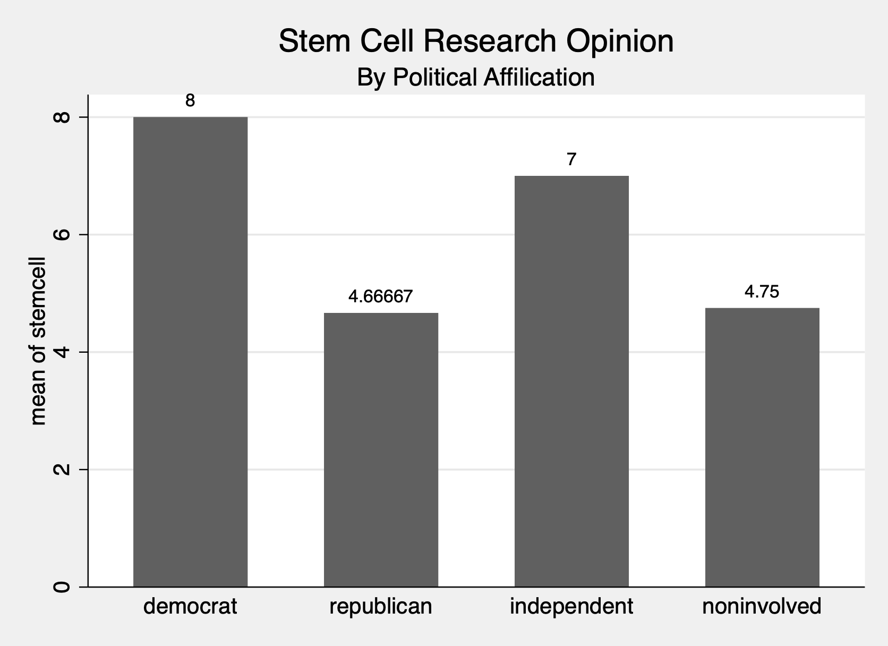

Chapter 2 Multiple Comparisons with pwmean
Instead of implementing the pairwaise comparisons of means in the ANOVA command, we can use the command pwmeans.
2.1 pwmean
Another option to do pairwise comparisons of means is to use the pwmean command. Using this command, we can get the difference in the different combinations of differences in means. However, we have additional options available when we use the pwmean command.
With the pwmean command, we need to specify the outcome/dependent variable of interest, which is stemcell. Next, we need to use the option over to compare the different pairwise means. Here we use the option by(partyid).
We will use the Bonferroni method for calculating \(t\) values and confidence intervals to keep it consistent with the prior section. We use the option mcompare(bonferroni) to calculate the \(t\) values and confidence intervals for each pairwise comparisons.
Additional options to be included are effects and cimeans. The effects option displays a table of mean differences with p-values and confidence intervals. The cimeans option display a table of means and confidence intervals.
Pairwise comparisons of means with equal variances
Over: partyid
--------------------------------------------------------------
| Unadjusted
stemcell | Mean Std. err. [95% conf. interval]
-------------+------------------------------------------------
partyid |
democrat | 8 .4546206 7.082538 8.917462
republican | 4.666667 .4546206 3.749205 5.584128
independent | 7 .4208969 6.150596 7.849404
noninvolved | 4.75 .5567943 3.626344 5.873656
--------------------------------------------------------------
---------------------------
| Number of
| comparisons
-------------+-------------
partyid | 6
---------------------------
---------------------------------------------------------------------------------------------
| Bonferroni Bonferroni
stemcell | Contrast Std. err. t P>|t| [95% conf. interval]
----------------------------+----------------------------------------------------------------
partyid |
republican vs democrat | -3.333333 .6429306 -5.18 0.000 -5.113618 -1.553048
independent vs democrat | -1 .6195435 -1.61 0.684 -2.715526 .7155256
noninvolved vs democrat | -3.25 .7188183 -4.52 0.000 -5.240419 -1.259581
independent vs republican | 2.333333 .6195435 3.77 0.003 .6178077 4.048859
noninvolved vs republican | .0833333 .7188183 0.12 1.000 -1.907086 2.073753
noninvolved vs independent | -2.25 .6979785 -3.22 0.015 -4.182714 -.3172864
---------------------------------------------------------------------------------------------Our results are similar to the output we saw in the ANOVA output for pairwise comparisons. Our differences in means are the same as is our \(t\) values. However, now we have standard errors and confidence intervals.
2.2 Graph the Means
We can also graph our results of the mean outcomes by party affiliation.
graph bar (mean) stemcell, over(partyid) scheme(s2mono) blabel(bar) title("Stem Cell Research Opinion") subtitle("By Political Affilication") 